How a network card driver actually works - TCP/IP down to descriptors, DMA and MSI - built three ways: an in-kernel engine, an emulated QEMU PCIe device, and a real tap to the host.
Navigate: ← → / buttons · F fullscreen · Home first slide · type a page number to jump · P print/PDF.
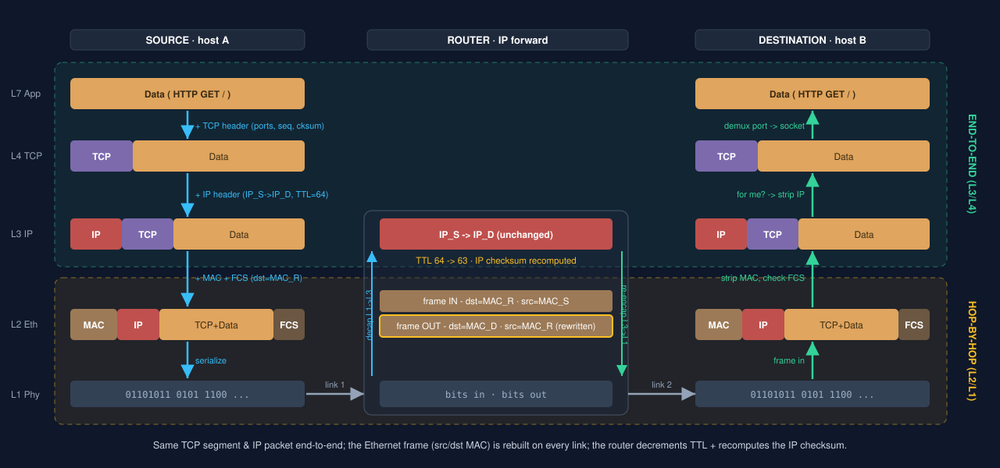
Encapsulation adds one header per layer (ports identify the connection, IP the host, MAC the next hop). Blue = encapsulate, green = decapsulate. Routing & ARP detail on the next slide.
At each hop the IP packet is delivered up to L3, re-routed, and re-framed:
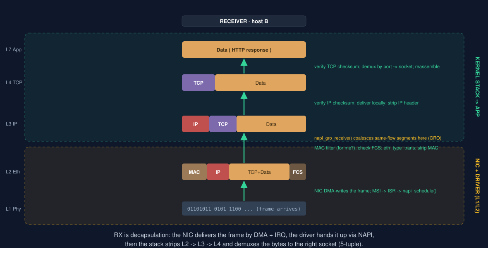
Each layer verifies then strips its header. The NIC driver owns L1/L2 (DMA, MSI, NAPI - the rest of this deck); the kernel stack owns L3/L4 up to the socket.
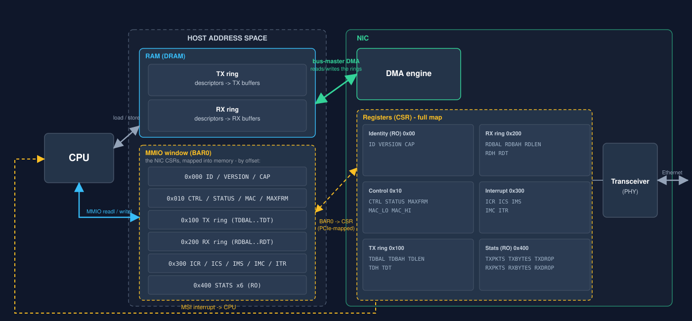
The CPU reaches RAM directly (load/store) and the NIC's registers through the BAR0 MMIO window (readl/writel - e.g. the TDT doorbell). The NIC's DMA engine is a bus master: it reads/writes the descriptor rings + buffers in RAM itself; completions raise an MSI. The transceiver (PHY) drives the wire.
| Offset | Name | Meaning |
|---|---|---|
0x00 | ID | RO identity = 0x564E3130 ("VN10") |
0x10 | CTRL | EN / RST / TXEN / RXEN |
0x14 | STATUS | RUNNING / LINK_UP |
0x100.. | TDBAL/H,TDLEN,TDH,TDT | TX ring base / len / head / tail doorbell |
0x200.. | RDBAL/H,RDLEN,RDH,RDT | RX ring base / len / head / refill tail |
0x300.. | ICR/ICS/IMS/IMC | interrupt cause (read-to-clear) / set / mask-set / mask-clear |
0x310 | ITR | interrupt moderation (microseconds) |
struct vn_desc| Field | Bytes | Use |
|---|---|---|
addr | 8 | buffer bus (DMA) address |
len | 4 | TX: packet length; RX: bytes received |
flags | 2 | TX cmd (EOP / RS); RX result |
status | 2 | DD = descriptor done (ownership) |
One spec header, include/vnic_regs.h, is shared by both the Linux driver and the QEMU device - so they cannot drift.
single queuesingle MSIMTU 68-9000 B (jumbo)
TDH/TDT) are MMIO. The CPU
writes descriptors with cheap cached stores + one doorbell; the device DMA-reads a
burst (with an on-chip prefetcher).TSAD0..3 (the packet's DMA address -> RAM) + TSD0..3
(length / status). The driver round-robins NUM_TX_DESC = 4.VN1000 deliberately uses the mainstream RAM-ring model (background-knowledge topic 8).
module_init) - pci_register_driver() with an ID table; the PCI core then calls probe on a match (L1 has no bus, so it builds the netdev directly).The next slides walk each piece: TX, RX, init/probe, MMIO & barriers, DMA, ISR, cleanup.
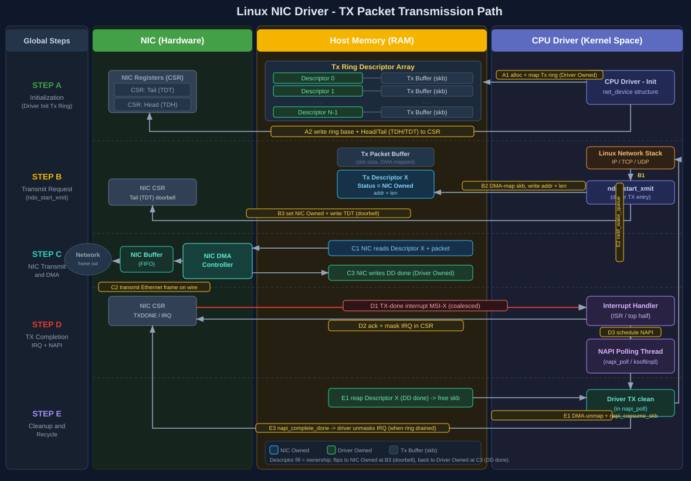
TDH/TDT) into the CSR.ndo_start_xmit): DMA-map the skb, fill a descriptor (clear DD = NIC-owned), dma_wmb, then ring the TDT doorbell.DD (done = driver-owned).ICR, masks the cause, and napi_schedule().DD descriptors, dma_unmap + frees the skb, wakes the queue, re-arms the IRQ.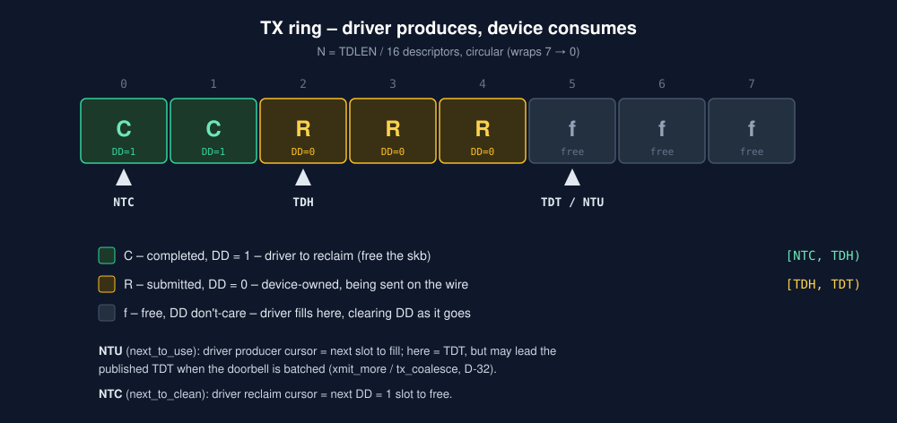
Driver produces, device consumes. DD is the ownership bit - green DD=1 = driver-owned (completed, reclaim it), amber DD=0 = device-owned (in flight). The hardware pointers TDH/TDT sit beside the driver's two software cursors: NTU (next_to_use, the producer - next slot to fill) and NTC (next_to_clean, the reclaim point). NTU may lead the published TDT when the doorbell is batched.
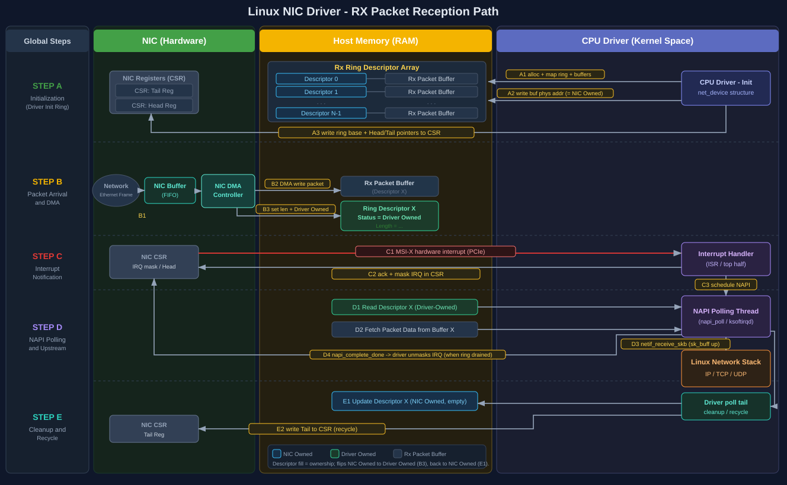
RDT.len + DD, advances RDH.napi_schedule().DD descriptors (dma_rmb), skb_put + eth_type_trans, then napi_gro_receive() up the stack.RDT; re-arm the IRQ once drained.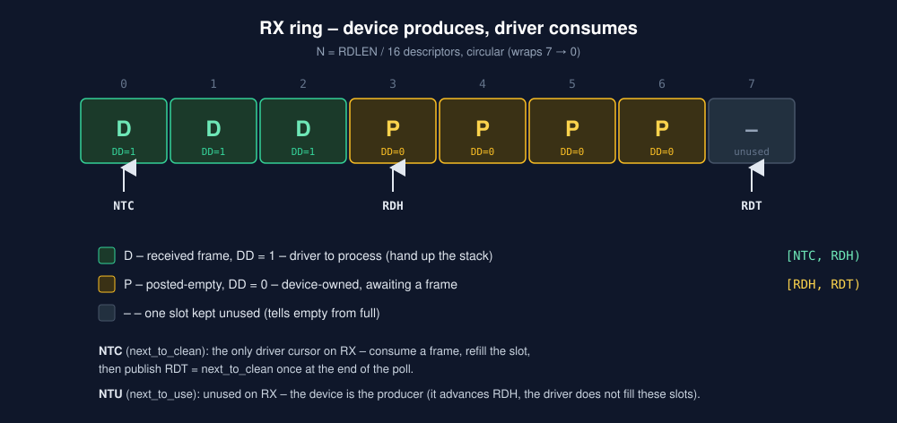
Device produces, driver consumes - the mirror of TX. green DD=1 = a received frame (driver-owned, hand it up); amber DD=0 = a posted-empty buffer the device still owns. Here only NTC (next_to_clean) is used - it consumes a frame then refills the slot, publishing RDT = NTC at end of poll. NTU is unused on RX, because the device is the producer (it advances RDH).
pci_register_driver() with an ID table ({vendor, device}).pci_enable_device + pci_request_regionspci_iomap(BAR0) -> the MMIO basepci_set_master (bus-master, for DMA) + dma_set_maskalloc_etherdev + register_netdev -> the interface appearsEnable + map before touching registers; set the DMA mask before any DMA alloc; register the netdev last, once the device is ready - so the first open can't race an unfinished setup.
register != open: after probe the interface exists but is DOWN; insmod does not bring the link up. ndo_open (on ip link set up) is what posts RX buffers, requests the IRQ, and starts the queue.
readl / writeldma_wmb(), then set DD (publish).READ_ONCE(DD), dma_rmb(), then read the buffer (observe).dma_* (not smp_*) because the peer is a device (L1 engine: smp_*).You cannot lock a device, so the rings are race-free by four cooperating guarantees:
DD says who owns each descriptor; only the owner writes it.dma_wmb before the flag, dma_rmb after it (no "saw DD, read stale payload").READ_ONCE - forces a fresh reload of the flag so the compiler can't spin on a cached value. It is not a fence - the compiler-level companion to dma_rmb.dma_unmap'd before the CPU reads them.The driver's tx_ring.lock only serialises its own xmit (process) vs clean (softirq) - not the device.
dma_alloc_coherent) - the descriptor ring: CPU and device both see it without explicit syncs; its bus address goes into TDBAL/H, RDBAL/H.dma_map_single) - the packet buffers: mapped per transfer, with a direction; unmapped on completion (which also syncs for the CPU).vn_desc.addr.dma_mapping_error(); keep the original skb separately to free it (the token is opaque).napi_schedule(). Done.napi_complete_done() + re-enable the interrupt (IMS).Why IMS/IMC (and ICR/ICS) are split pairs: write-1-to-set / write-1-to-clear lets the ISR mask and the poll re-arm flip only their own bits with one atomic write - no read-modify-write race, no costly MMIO read of the mask.
One interrupt wakes a poll that drains many packets, then re-arms - this avoids an interrupt-per-packet storm at high load while staying low-latency when idle (NAPI).
Interrupt moderation (ITR) is a second, device-side cap on the interrupt rate.
synchronize_irq).unregister_netdev (closes the device first if up).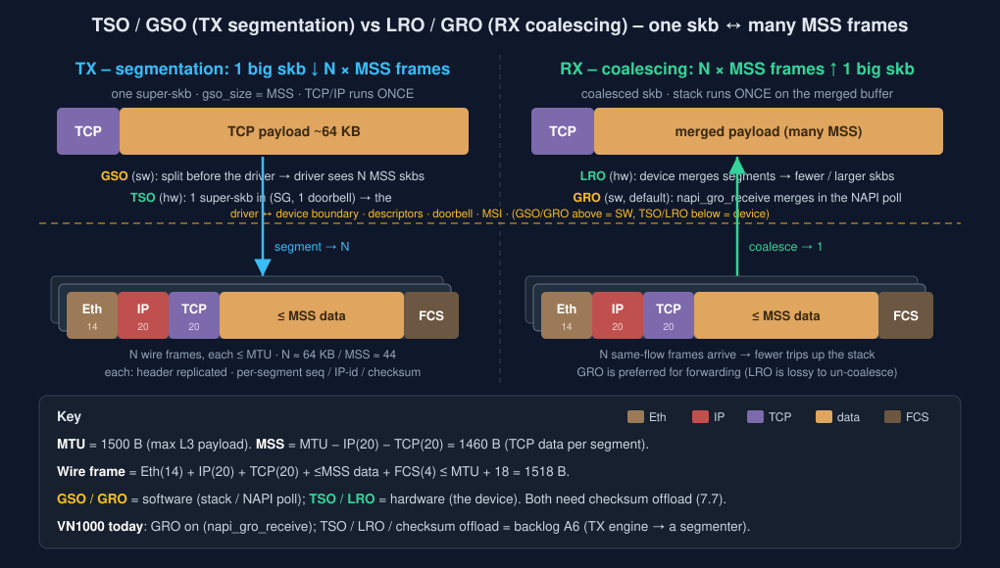
napi_gro_receive); TSO / LRO / checksum = backlog A6 (the TX engine would become a segmenter).TYPE_PCI_DEVICE; instance struct embeds PCIDevice.MemoryRegion + pci_register_bar; msi_init; (real NIC) create the backend.MemoryRegionOps.read/write) = the device's register logic (the doorbell, ICR/IMS/...).pci_dma_read/pci_dma_write at the driver's bus addresses.msi_notify.| Guest does | QEMU runs |
|---|---|
| readl/writel on BAR0 | vnic_mmio_read/write |
| writel(TDT) doorbell | walk the ring, pci_dma_read + send |
| (device DMA) | pci_dma_read/write guest RAM |
| request_irq fires | msi_notify -> APIC injects |
A backend (-netdev tap) carries frames out: TX qemu_send_packet, RX a receive() callback.
Understand the Linux NIC driver working flow by building one - the same driver core, three progressively more real "devices" behind one HAL seam.
vnic_loop0.vnic0, bound to an emulated PCIe device in a self-built QEMU.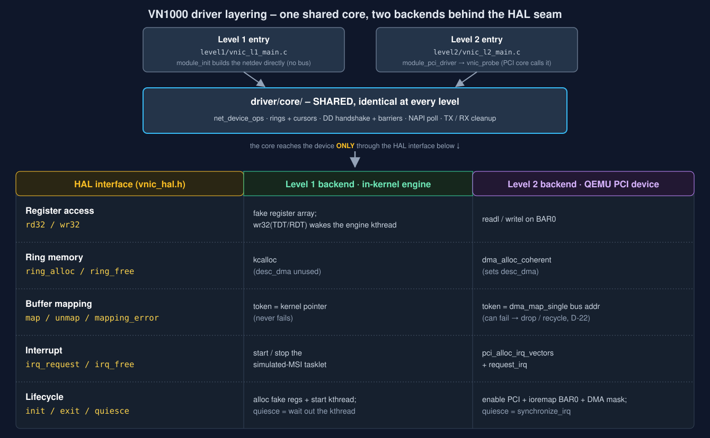
core/ is written once and reused unchanged at every level.ring->bufs[]).TDT/RDT) and mask (IMS/IMC) are just wr32 - no extra HAL verbs.LEVEL=1|2 links exactly one backend.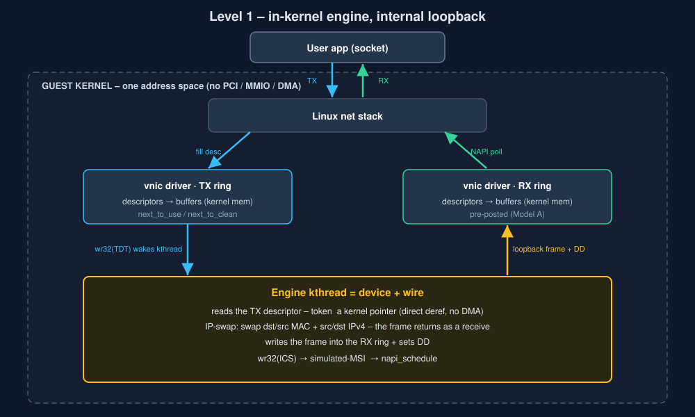
TDT doorbell (a wr32) wakes it.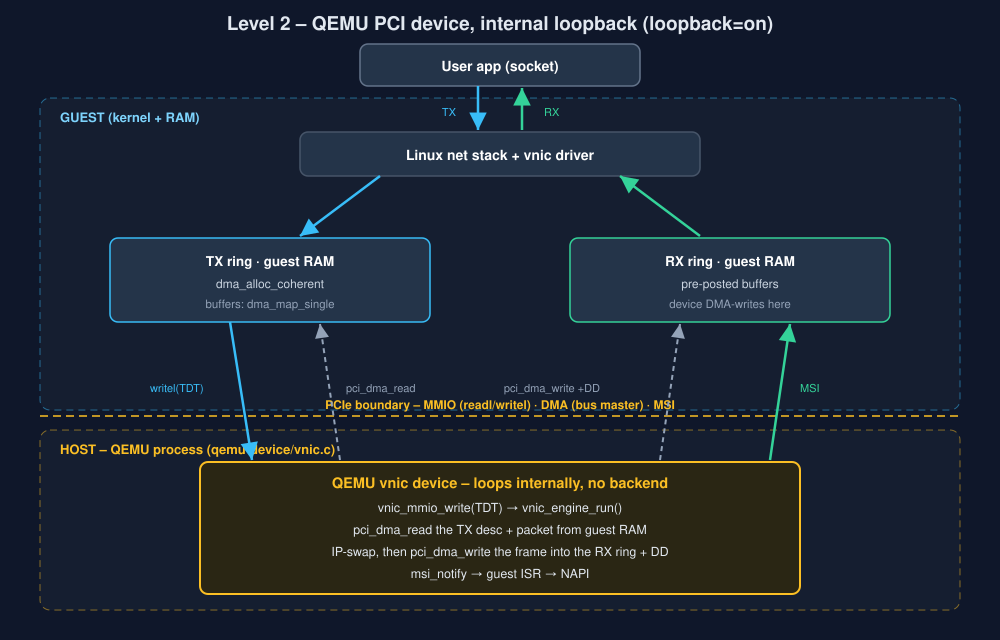
dma_alloc_coherent).pci_dma_read/write).writel(TDT).loopback=on: loops internally, no backend.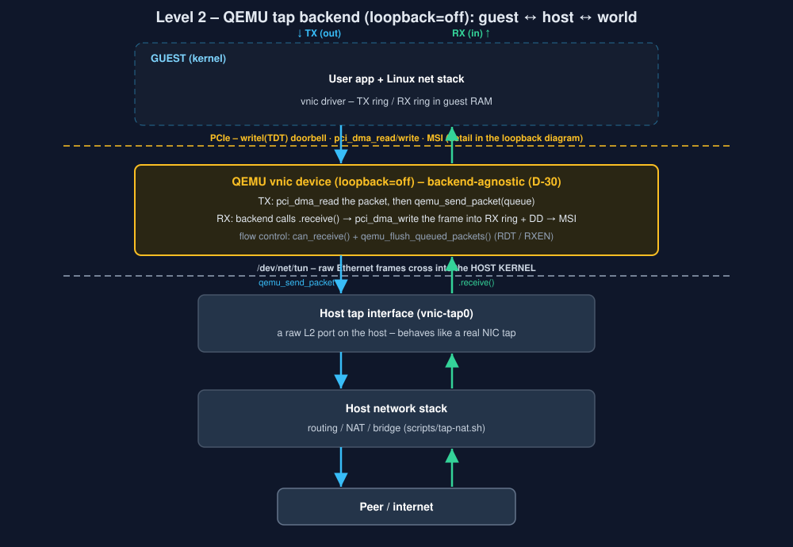
loopback=off bridges real frames guest↔host↔internet.pci_dma_read → qemu_send_packet → host tap..receive() → DMA-write RX + MSI.can_receive() + flush (RDT / RXEN).dev-setup.md).scripts/run-qemu.sh boots it (q35, -s gdbstub).qemu-device/vnic.c) is compiled into a QEMU source tree (hw/net/ + a meson/Kconfig hook), pinned to the guest's QEMU version.QEMU=... VNIC_DEVICE=1 run-qemu.sh boots the guest under it.qemu-build.md.tests/run-all.sh = 01-smoke, 02-lifecycle, 03-concurrency, 04-ringfull, 05-edge, 06-faultinject.MODULE=: same suite runs on L1 (vnic_loop0) and L2 (vnic0).tests/07-tap.sh: ping the host, iperf3 both ways, optional reach to the internet.ip tuntap) + optional router/NAT (scripts/tap-nat.sh).| Lever | What it changes | Measured |
|---|---|---|
| TX doorbell batching batch the TDT write over an xmit_more burst |
fewer per-packet MMIO VM-exits | 414 Mbit/s → 1.86 Gbit/s ~4.5x |
| ITR interrupt moderation coalesce MSIs to ≤ 1 per ITR us |
fewer interrupts / less CPU, throughput flat | 849 → 14 ints/s ~60x |
| MTU (jumbo) amortize per-packet cost over more bytes |
higher throughput; does not cut interrupts (NAPI-driven) | 1500 → 9000: RX ~7.4 / TX ~8.4 Gbit/s ~2.5x |
Doorbell-batching, ITR and MTU all attack the per-packet fixed cost (descriptor, DMA-map, skb, stack, the MMIO exit). Checksum is per-byte - only an offload removes it. Coalescing buys throughput/CPU at the cost of latency; polling buys latency at the cost of CPU.
HTTP GET to a descriptor on a ringnet_device + descriptor rings + the DD/barrier handshake + an MMIO doorbell + an MSI + a NAPI poll - one loop, built three ways behind one HAL seam.
Start here: docs/nic-driver-walkthrough.md · design: architecture.md ·
why: design-decisions.md · mechanisms: background-knowledge.md ·
findings: lessons-learned.md
Thank you